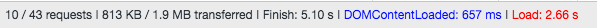
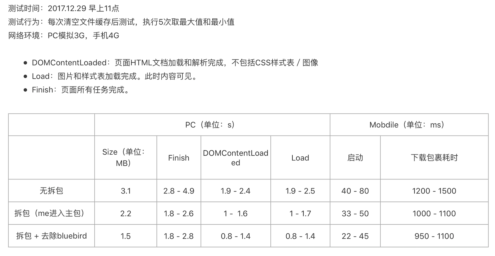
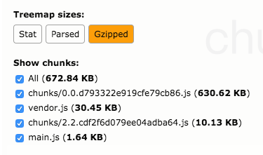
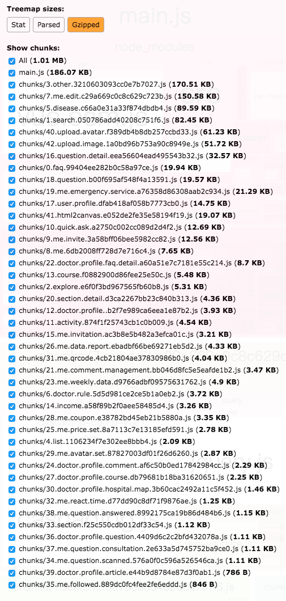

这份文字是根据近期团队做来问丁香医生 SPA和丁香医生小程序加载速度优化的经历整理而成。
微信扫一扫，体验丁香医生小程序：
效果
古人有一句话叫做：治感冒看疗效。既然是关于速度优化的，我们就先来看一下优化的效果。
来问丁香医生
Chrome Network
选取了访问量较大的首页和我的页面进行随机取样，通过下图可以看到首页的加载时间从 5.1s 下降到 1.67s，我的页面从 2.92s 下降到 1.82s。
优化前
首页

我的页面
优化后
首页
我的页面
mta
2018.01.02 早上的页面响应速度数据，目前国内各省份平均加载速度在 0.99~2s（虽然没有达到 1s 内加载，但是以目前业务量级，这样的速度是可以被接受的）：
Google PageSpeed Insights 和 pagespeed insights Chrome 插件
前者这是 Google 的一个评分工具，最开始做优化时用它测了一些页面的分数。后来发现了后面这些 Chrome 插件。让我困惑的是同样的页面这几个工具给出的结果分数都不一样。手淘 的首屏加载速度挺快的，但是跑出来的分数也不高。最终我只是选择性的参考一下工具给出来的建议，忽视了其给出的评分。
丁香医生小程序
对于小程序，做了优化后得到部门同学的反馈是这样的：
具体的数据指标如何呢？虽然目前没有特别好用的性能检测方式（包括官方提供的性能检测工具在内），最终我们组的舒哲同学还是利用官方提供的工具做了一下简单的数据对比，数据如下：

在不影响产品需求正常迭代的前提下，两个项目的优化断断续续持续了两周。整体上来说，本次优化的性价比还是较高的。
为什么做加载速度优化？
直接原因很简单：慢。虽然说页面加载速度并没有达到慢的让人无法忍受，但至少没办法让人说加载很快。
既然明知道加载速度不快，那之前在干什么？为什么不早早的去做优化呢？
这是一个好问题，我曾经在深夜中问过自己多次。我给自己的答案是：首先，要承认自身技术水平和经验的限制，如果是一个在前端战场上身经百战的人一直在负责项目的迭代，或许情况会比优化前好一些。 其次，之前整个产品线的项目一直处于探索和快速迭代中，前端研发资源基本上总是处在被需求排满的状态下，产品需求快速上线的优先级是最高的。正是因为产品的整体节奏稍微放缓了一些，才让研发资源有精力来做一些优化。
为什么说是前端响应速度优化，而不是前后端？
因为我是亲眼看着这两个项目逐渐长大的，单从前端工程的角度来审视，在自己的认知范围内，早就认为项目中有一些地方是需要优化的。坚定了先从前端动手的想法，是因为读了《高性能网站建设指南》这本书，书中提到了一个性能黄金法则（Performance Golden Rule）：只有 10% ~ 20% 的最终用户响应时间是花在下载 HTML 文档上。话说到这个份上，还犹豫什么呢，先从前端项目开始撸起袖子加油干吧。
之前去 Qcon 等技术大会上，听过几次关于加载速度的分享。比如：使用 HTTP2，整站级别的前后端优化等。方案确实是好的方案，但具体是否要应用到自己团队实际项目中，还得根据执行成本、团队技术储备等维度从长计议。
为什么说是初级？
因为深感自己在前端性能优化这个领域还有很长的路要走。
如何做的？
前戏这么长，终于可以开始了。
来问丁香医生 SPA
先看图（绿色部分为已在项目中应用的方法）：
实现游客机制
最初来问丁香医生是基于微信服务号做的，当时的设计是用户通过服务号菜单进入应用时，会自动帮他进行跳转登录，登录成功后服务端再重定向回到应用。登录这个环节，虽然与项目代码层面的加载优化关系不大，但是从用户体验的角度这样的流程是不好的。因为相比于直接打开页面，用户需要等更长的时间，并且会看到两次页面加载的进度条。从产品的角度，一些页面是不需要用户登录即可访问的。综上，将登录流程后置，让用户可以直接进入应用这件事情，于情于理都是必须要做的。
改造流程大致为：梳理产品现有流程 -> 用户进入应用时取消强制登录 -> 在产品流程核心环节进行用户登录状态判断并引导登录。具体实现细节不再赘述。
减小资源包体积
实现了游客机制后，接下来就是对应用的资源包动手了。因为通过 Chrome 开发者工具的 Network 可以看出，下载 CSS、JS 资源还是占用了不少时间的。下图是减小资源包体积之前的情况：
优化前包体积大小-Gzipped

精简第三方依赖
想要减少资源体积大小，首先需要知道哪些资源时应该/可以被删除的。由于项目是基于 Webpack 构建的，因此可以使用Webpack Bundle Analyzer进行分析Webpack 生成的包体组成。然后根据实际情况进行移除就好。
精简了第三方依赖后，启动应用时需要下载的资源体积还是挺大的。此时就需要使用 Webpack 的代码分离和懒加载进行进一步的优化。
代码分离
代码分离的思想就是化整为零，将代码分离到不同的 bundle 中，然后可以按需加载或并行加载这些小的 bundle 文件。
代码分离主要是利用 Webpack 的动态导入
Webpack 目前有三种常用的代码分离方法：
- 入口起点：使用 entry 配置手动地分离代码。（优势：简单、直观。劣势：配置繁琐、同一份代码可能会被引入到各个 bundle 中、不灵活，并不能将核心应用程序逻辑进行动态拆分代码）
- 防止重复：使用 CommonsChunkPlugin 去重和分离 chunk。
- 动态导入：通过模块的内联函数调用来分离代码。
经过对比之后，最终选择了动态导入的方式。
动态导入(dynamic imports)
webpack 提供了两个类似的技术：
- import() 语法（推荐，符合 ECMAScript 提案）
- require.ensure（webpack 钦定）
示例
1 | // 分离 lodash |
懒加载
懒加载是在代码分离的基础上更近了一步。
虽然我们可以将代码进行代码分离，但代码分离后的 bundle 只是加载的优先级会不同，最终还是会加载，但实际情况是某些代码在用户进行某项操作之前是不需要加载的。比如：个人信息编辑页面有一个用户修改头像功能，对于用户来说，即使他进入了个人信息编辑页面，在他未点击上传按钮之前，用于上传头像的代码是没必要加载的。
Vue-Router 结合 Vue 的异步组件和 Webpack 的代码分割)功能，实现了路由组件的懒加载。
在经过精简依赖、代码分离和懒加载之后，项目的资源包体积大小如下图：
Gzipped：

用户进入首页需要加载的 js 资源从 vendor.js、main.js 和 chunks 共 672.84kb 变为只需要加载一个 186kb 的 main.js。
复用 Store 数据以减少网络请求数量
来问丁香医生是基于 Vue.js 全家桶实现的，状态管理用的是 Vuex。
之前的实现中，有些功能实现没有很在意 Store 数据的复用。比如：从 A 页面进入 B 页面后再返回 A 页面时，会再去获取端获取一次 A 页面需要的数据。这种处理不仅仅是多发了不必要的请求，如果在请求过程中做了一些页面级别加载中的处理，那么每次切换页面时都会让用户看到 loading 效果，这也会让人觉得加载慢。既然用了状态管理，那么就应该把他利用好才是。
本次优化过程中的数据复用，主要是在部分请求 action 之前增加逻辑判断，如果 Store 中有当前操作需要的数据，则不再调用 action。
前后端彻底分离
关于这一点会再写一篇文章进行阐述。
丁香医生小程序
老规矩，先看图：
图片资源
最开始做小程序时，是把所有图片资源 base64 后进行使用的，这导致了所有图片资源最终都被打包到小程序的安装包中。所以做小程序的加载速度优化的第一步，就是把一些体积较大的图片资源改为使用线上资源。具体做法是将素材先上传到 cdn，然后在小程序中直接使用线上图片地址。
登录鉴权优化
原本小程序的登录是我们自己实现的一套登录方案，核心是前后端一起维护一个类似于 SessionId 的 ID。服务端对于这个 ID 是设置了有效期的，而之前前端的实现是每次用户启动小程序，都直接去请求公司的 SSO 获取一个新的 ID，没有在意本地的 ID 是否过期。
优化的点在于在应用启动时，增加对 ID 有效期的判断，从而避免每次用户启动都需要发请求获取新的 ID。
预渲染
之前在小程序所有需要从服务端获取数据的页面，都实现了一个加载中的效果，即请求未返回结果时，整个页面用户只会看到一个加载中的菊花。如果某页面只有服务端提供的元数据级别接口，没有业务接口，并且接口返回的数据是有依赖关系的，那么用户等待的时间会大大加长。
仔细思考会发现，其实是没有必要等所有接口数据回来后再给用户呈现完整页面的。
最终的优化方案分为两种：一种是取消加载中效果，先给用户呈现完整的利用本地数据渲染好的页面，等接口返回数据后在进行页面视图的更新；另外一种方案是取消加载中效果，但是不做本地数据渲染，而是直接给用户看到部分静态页面。
分包加载
关于分包加载，就老老实实的按照官方文档做就好了。进行分包后的效果还是很不错的。具体效果可以参考文章开头的数据统计。
目前上述方案中，效果比较明显的是预渲染和分包加载。一个是视觉上让用户觉得快了，一个是真真切切的把首次加载的资源包变小了。
总结
- 软件的性能，在编写第一行代码开始，到软件的生命周期结束，都应该给予足够的重视（在做项目写代码的过程中能规避可能出现的性能问题，是需要一定的技术功底的，在实现的时候也不一定非得强求性能，慢慢修炼就好）。
- 在涉及到项目架构层面的改动时，一定一定要做足够的回归测试（经历过的热都应该知道为什么会这么说）。
- 要学会用数据说话。
结束了吗？
No！前端性能优化这条路，路漫漫其修远兮。